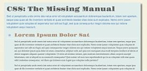
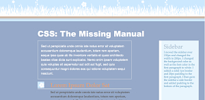
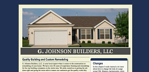
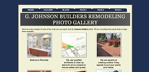
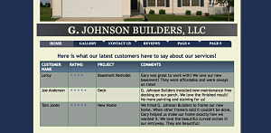
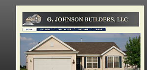

Assignment 1

This assignment reviews the basics of HTML and CSS. The linked assignment illustrates the result of changing some of the font-sizes
and the use of an external stylesheet to make the changes.
Assignment 2

Assignment 2 introduces the use of selectors, pseudo-classes, ineritance and cascades. The example was done using those topics to make changes to the textbook site.
Assignment 3

Assignment 3 is where the G. Johnson Builders website starts. This new site will be expanded on throughout the class. This assignment
utilizes new fonts, font sizes and styling fonts. It also expands on margin">
Assignment 4

Assignment 4 is all about graphics and navigation. A gallery is added to the website along with some spruced up navigation.
Assignment 5

Assignment 5 displays some new interactive abilities you can use in CSS. The main page now features an animated photo as well as interactiv navigation. This assingment
is also where tables and forms are used. The site now has a nice table to display reviews and a stylish contact form.
Assignment 6
Assignment 6 brings our website up to date with today's technology by introducing responsive design. This makes our site
adjust to look good on multiple screen sizes. It also brings the use of floating content to group areas of our pages together.
Assignment 7

Assignment 7 site changes might to be obvious but makes our site functional for printing. It also utilizes good CSS habits
to make sure our code is organized, and easy to understand. Comments are added to the code. This also uses a technique used on this page. Making thing visible
when the user hovers over something make a site look good makes it interactiv.